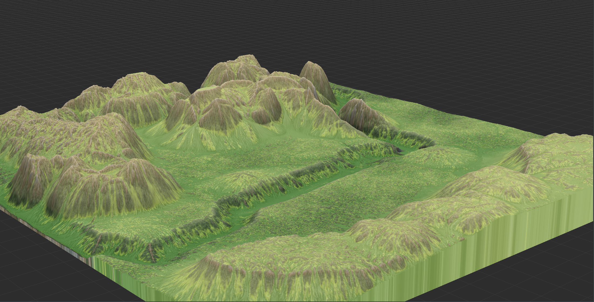
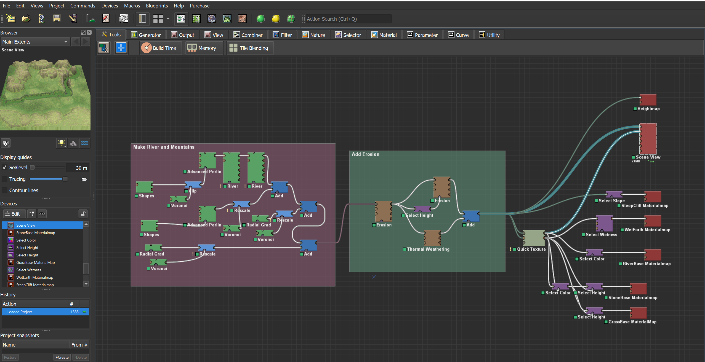
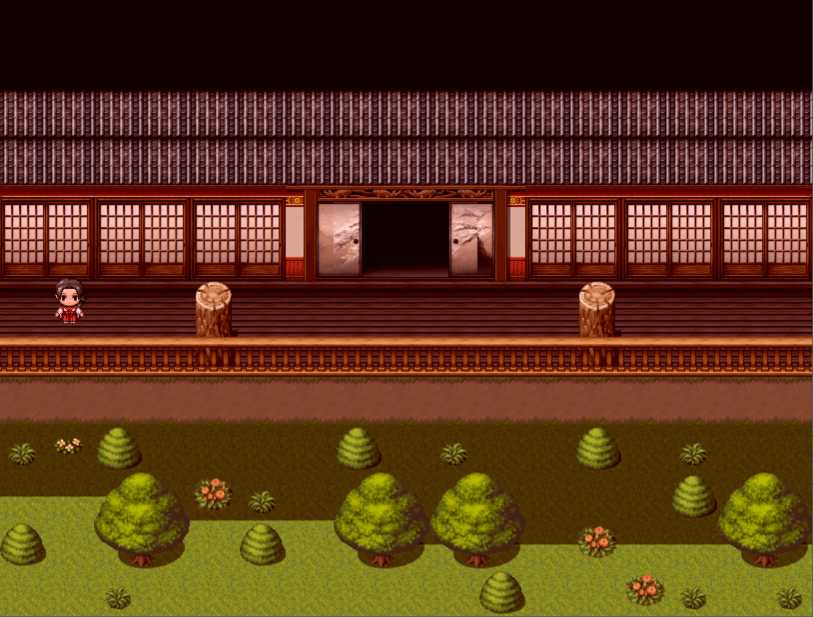
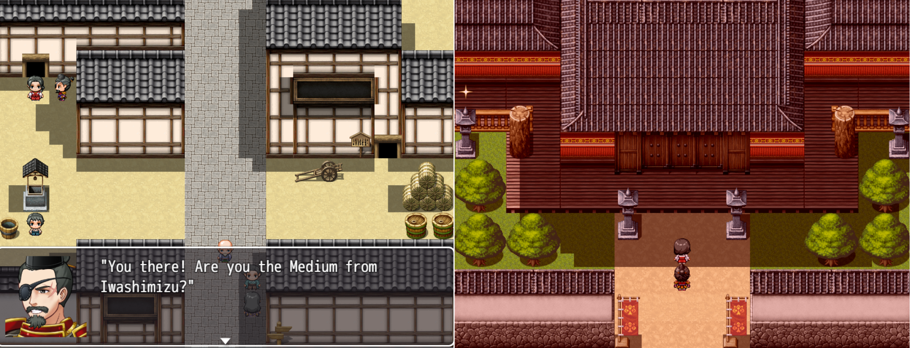

WorldMachine Terrain in Mount and Blade II: Bannerlord
Mount and Blade: Warband is one of my most played games on Steam, and much of this playtime is thanks to the wonderful work of the modding community. When Mount and Blade II: Bannerlord came out in early access, I realized it would be a good opportunity to develop my own skills as a scene designer. I taught myself the node-based terrain generation software WorldMachine, which I used to design a map with an emphasis on natural realism and a balance between open and tight spaces in which battles could take place.
For my River Valley map, I used reference images of Malibu Creek State Park by my home in California and drew out the simple geometry of the mountains and river using shape nodes. I applied perlin and voronoi noises to these features to create rough surfaces before applying a ground level and river course. I then used multiple layers of erosion to carve out the river banks and create natural looking slopes for the mountains and valley.
I exported heightmap layers that I used to generate terrain in the Bannerlord Level Editor, where I used more heightmaps to paint terrain efficiently and quickly. I then went through the map and painted foliage by hand while incorporating structures, smoothing terrain, and building an immersive map boundary. Finally, I painted a Navigation Mesh for the CPU soldiers to follow, playing close attention to the two river crossings that I knew would be key features of players' tactics.


Navigation Mesh. Sculpted by hand to ensure proper pathing at two river crossings.

An example of paint layers. I selected the surface textures and foliage
type
RPGMakerMV
Here are two projects I made using the MV installation of the RPGMaker franchise. For both projects, I used premade tile assets to build and layout a world that I designed and populated with NPCs, items, and functional events.
“Caged Beasts” started as an itch.io October RPGMaker Game Jam that I undertook with a friend and fellow Dartmouth student. We divided the work between us with my teammate writing the story, me designing the maps and incorporating everything into RPGMakerMV, and both of us collaborating on the chase scenes and puzzles. Of the content, I designed the hedge garden chase scene, the werewolf chase scene, and the mechanical component puzzle on the first floor. I also sourced plug-ins, sprites and other assets, chose music and sound effects, and animated cutscenes according to my teammate's dialogue and blocking. I have since continued to update/patch the game, including introducing a browser-playable version.

I made “Heike Tale” in RPGMakerMV as my final demo for the Game Design Studio course I completed in Spring 2022. This RPG was my attempt at making an immersive and historically honest portrayal of the Medieval Japanese epic Tale of the Heike. The demo contains a single dungeon based on a few starting chapters, and showcases puzzles, combat, cutscenes, and period architecture and sprites.